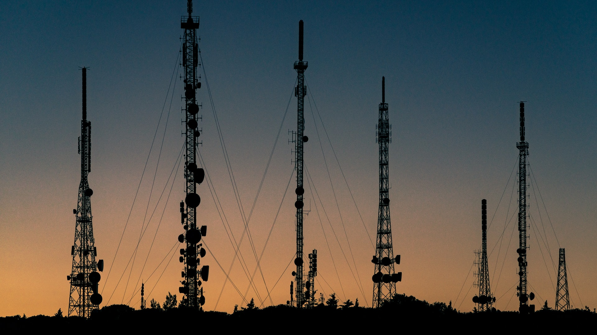

O que?
Neste projeto foi feito planejamento para a implantação de sistemas de telecomunicações fixos e móveis, desde os tipos de topologias, tipos de entroncamento entre centrais/ERBs e CCCs, padrões e normas de provimento de energia para as entradas de subestação dos sites, sistemas de combate de incendios e sistemas de proteção contra as descargas atmosféricas.
Como?
Identificar os pontos de instalação de ERBs e CCCs com as ferramentas como google earth e o software de UbiquitiLink/LINKPlanner para analisar a viabilidade dos enlaces ponto a ponto, assim como os enlaces ponto multiponto.
Registrar todos os pontos para instalação de ERBs e CCCs nas planilhas de excel.
Utilizar a ferramenta como diagrams.net para desenhar as diagramas de conexões entre os ERBs e CCCs de todas as regiões.
Definir as topologias adequadas.
Especificações gerais descritiva das principais funcionalidades dos equipamentos de telecomunicações e sistemas da infraestrutura predial e energia de refrigeração para os prédios do tipo I, II e III.
Definir as torres de transmissão.
Fazer a interconexão dos sistemas fixos e móveis.
Implantação de ERBs.
Implantação de fibras ópticas urbanas e interurbanas.
Caracterizar e especificar as infraestruturas para implantação dos enlaces de rádio SDH e respectivas torres e estruturas associadas em todas as rotas.
Definir sistemas de operação e supervisão e manutenção da operação dos serviçõs fixos e móvel da longa distância.
Análisar os Impactos Ambientais.
Resultados
Clique aqui para ver os resultados em detalhes.